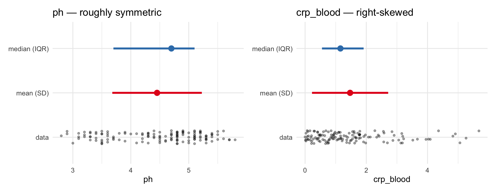
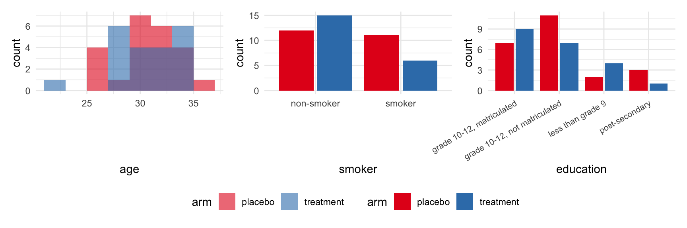
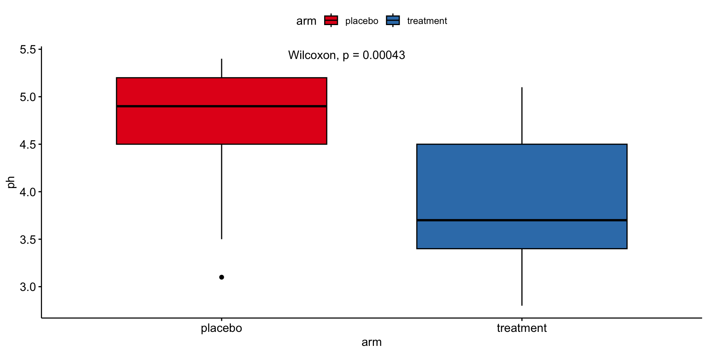
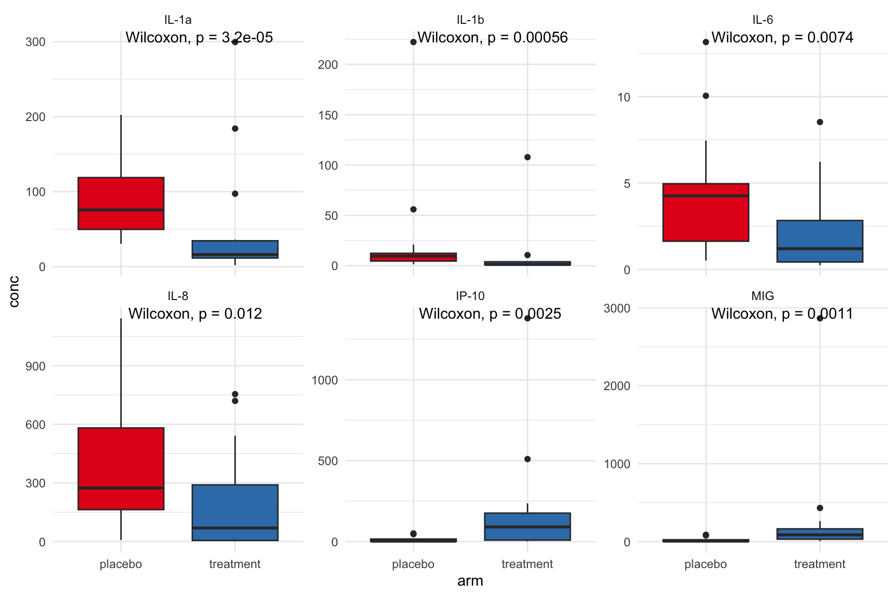
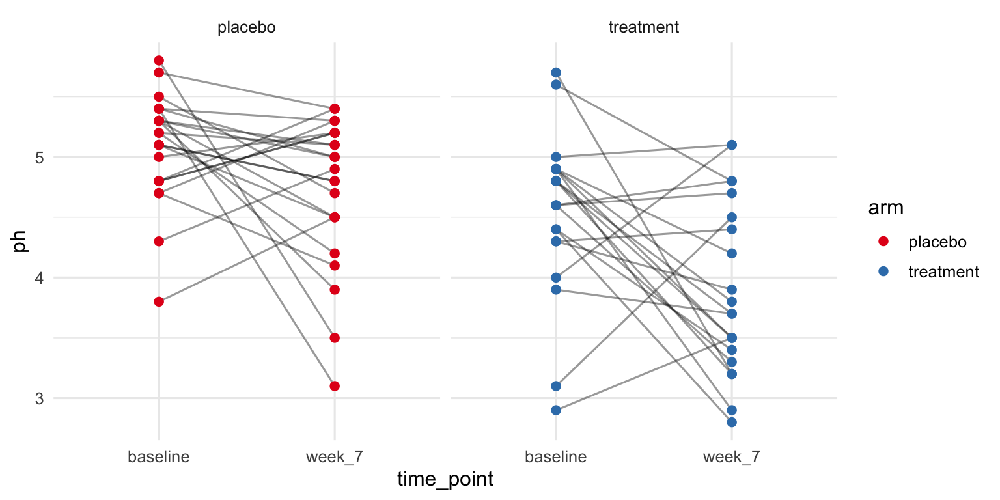
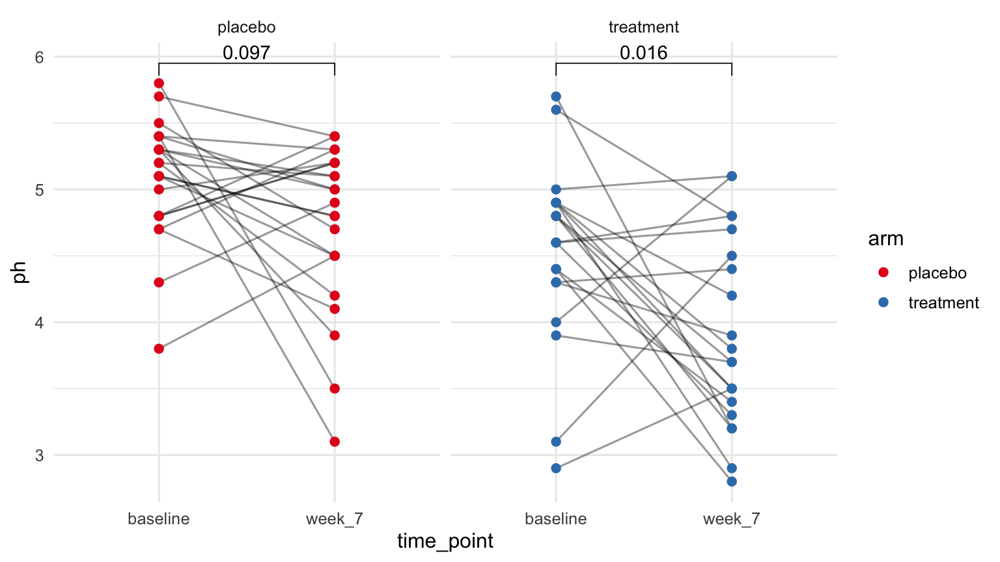
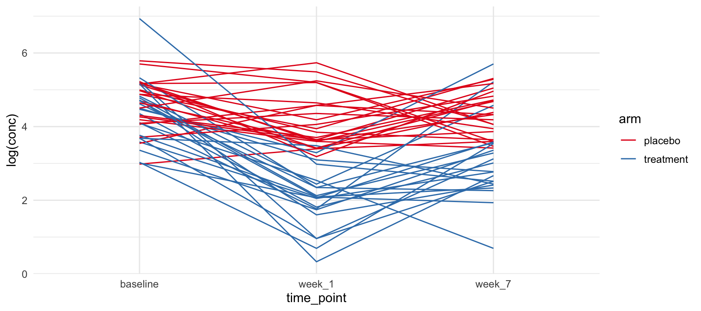

| Characteristic | placebo N = 231 |
treatment N = 211 |
|---|---|---|
| smoker | ||
| non-smoker | 12 (52%) | 15 (71%) |
| smoker | 11 (48%) | 6 (29%) |
| age | 31.00 (30.00, 33.00) | 31.00 (29.00, 34.00) |
| education | ||
| grade 10-12, matriculated | 7 (30%) | 9 (43%) |
| grade 10-12, not matriculated | 11 (48%) | 7 (33%) |
| less than grade 9 | 2 (8.7%) | 4 (19%) |
| post-secondary | 3 (13%) | 1 (4.8%) |
| 1 n (%); Median (Q1, Q3) | ||
gtsummary and ggpubr for hypothesis testing
Workshop 1, Module 6
From models to reports
Yesterday we learned to model our data and interpret the outputs. Today we turn to the other half of the job: presenting those outputs so they are ready for publication.
A paper expects:
- Table 1 — who was in the study
- Table 2 — what differed between groups
- Figures with p-values for the headline comparisons
Goals for this module
By the end of this module you can:
- report the findings of a fitted model (
lm,glm,lmer) in a publication-ready table - read an analysis plan and pick the gtsummary or ggpubr call for each row
- produce a Table 1 with
tbl_summary() |> add_p()and override the default summary statistic and test per column - produce a Table 2 (outcome by arm) and the matching boxplot with
stat_compare_means() - recognise when a paired test is the right test
- report an adjusted analysis with
lm() |> tbl_regression()
The analysis plan comes first
An analysis plan is the list of questions you want to ask your data, written down before you touch R. Each row is one question.
What would you want to know about a randomized trial like this one?
- Who is in the study?
- Did randomization balance the two arms?
- Does the outcome differ between arms?
- Did the outcome change within a person, baseline vs week 7?
- Does the effect hold after adjusting for age or smoking?
Each of these is one row in the plan, and each maps to a single gtsummary or ggpubr call. The rest of the module walks them in order.
Refine your plan with an LLM
Before you write any code, paste your analysis plan into a chat with an LLM and ask:
- which questions are ambiguous?
- which comparisons did I forget?
- which defaults am I accepting without thinking?
- where does my plan slip into causal language without earning it?
The LLM does not know your study design, your hypotheses, or your prior literature. It can only push back on what you wrote. The plan stays yours.
Who is in the study?
Mean (SD) and median (IQR), side by side
The Table 1 above used median (IQR) by default. Here is each summary drawn on two of the columns we will work with.

What do you notice about median (IQR) versus mean (SD) for these two columns?
For symmetric columns the two intervals agree. For skewed columns, the mean is pulled toward the tail; the IQR stays where most of the data sits.
Look at the columns before you trust the summary

The Table 1 is a summary of these distributions. Always know what they look like before you trust the summary.
Distribution drives two decisions
The decision to describe a column as median (IQR) vs mean (SD) is the same decision as choosing Wilcoxon vs t-test. Both follow from how skewed the column is.
- skewed continuous → median (IQR) + Wilcoxon
- symmetric continuous → mean (SD) + t-test
- sparse categorical (small cells) → counts (%) + Fisher exact
- dense categorical → counts (%) + chi-squared
gtsummary lets you set both with parallel statistic = list(...) and test = list(...) arguments.
Override the defaults for one column
| Characteristic | placebo N = 231 |
treatment N = 211 |
p-value2 |
|---|---|---|---|
| smoker | 0.2 | ||
| non-smoker | 12 (52%) | 15 (71%) | |
| smoker | 11 (48%) | 6 (29%) | |
| age | 31.2 (2.6) | 30.9 (3.3) | 0.7 |
| education | 0.5 | ||
| grade 10-12, matriculated | 7 (30%) | 9 (43%) | |
| grade 10-12, not matriculated | 11 (48%) | 7 (33%) | |
| less than grade 9 | 2 (8.7%) | 4 (19%) | |
| post-secondary | 3 (13%) | 1 (4.8%) | |
| 1 n (%); Mean (SD) | |||
| 2 Pearson’s Chi-squared test; Welch Two Sample t-test; Fisher’s exact test | |||
statistic = list(age ~ "{mean} ({sd})") controls how age is shown. test = list(age ~ "t.test") controls how it is tested. The same <column> ~ <choice> shape works for both.
To do this for every continuous column at once: all_continuous() ~ "{mean} ({sd})".
Polish for publication
| Characteristic | Overall N = 441 |
placebo N = 231 |
treatment N = 211 |
p-value2 |
|---|---|---|---|---|
| smoker | 0.2 | |||
| non-smoker | 27 (61%) | 12 (52%) | 15 (71%) | |
| smoker | 17 (39%) | 11 (48%) | 6 (29%) | |
| age | 31.00 (29.00, 33.50) | 31.00 (30.00, 33.00) | 31.00 (29.00, 34.00) | >0.9 |
| education | 0.5 | |||
| grade 10-12, matriculated | 16 (36%) | 7 (30%) | 9 (43%) | |
| grade 10-12, not matriculated | 18 (41%) | 11 (48%) | 7 (33%) | |
| less than grade 9 | 6 (14%) | 2 (8.7%) | 4 (19%) | |
| post-secondary | 4 (9.1%) | 3 (13%) | 1 (4.8%) | |
| 1 n (%); Median (Q1, Q3) | ||||
| 2 Pearson’s Chi-squared test; Wilcoxon rank sum test; Fisher’s exact test | ||||
add_overall() adds a column for the full sample. bold_labels() makes row labels bold. modify_header() renames columns.
Let’s take a poll
Go to the event on wooclap

Exercise 1
Open notebooks/06-table-one.qmd in your Codespace.
Group A: agentic. Group B: manual.
Outcomes & Table 2 questions
From description to comparison
So far the questions have been descriptive: who is in the study, and what each arm looks like on its own.
The next questions are comparative. Each one sets two numbers next to each other and asks whether the difference is more than noise:
- between arms — does the outcome differ by treatment?
- within a person — did it change from baseline to week 7?
- after adjustment — does the difference survive controlling for age or smoking?
Table 2: outcome by arm
| Characteristic | placebo N = 231 |
treatment N = 211 |
p-value2 |
|---|---|---|---|
| nugent_score | <0.001 | ||
| 1 | 0 (0%) | 2 (9.5%) | |
| 2 | 0 (0%) | 6 (29%) | |
| 3 | 3 (13%) | 4 (19%) | |
| 4 | 3 (13%) | 5 (24%) | |
| 5 | 3 (13%) | 1 (4.8%) | |
| 6 | 1 (4.3%) | 3 (14%) | |
| 7 | 8 (35%) | 0 (0%) | |
| 8 | 4 (17%) | 0 (0%) | |
| 9 | 1 (4.3%) | 0 (0%) | |
| crp_blood | 1.97 (1.27, 3.22) | 0.70 (0.45, 1.15) | <0.001 |
| ph | 4.90 (4.50, 5.20) | 3.70 (3.40, 4.50) | <0.001 |
| 1 n (%); Median (Q1, Q3) | |||
| 2 Fisher’s exact test; Wilcoxon rank sum test | |||
Three outcome rows, two arms. add_p() picks Wilcoxon for all three (the columns are non-normal at this n). The p-values are now real inferential answers, not sanity checks.
Same question, visual form

ggboxplot() is ggpubr’s themed boxplot wrapper. stat_compare_means() is a ggplot layer that adds the p-value. The table-form and figure-form of this test should give the same p-value, and they do.
A new table: cytokines
# A tibble: 6 × 4
sample_id cytokine conc limits
<chr> <chr> <dbl> <chr>
1 SAMP094 IL-1a 174. within limits
2 SAMP094 IL-10 0.767 out of range
3 SAMP094 IL-1b 5.39 within limits
4 SAMP094 IL-8 48.3 within limits
5 SAMP094 IL-6 5.07 within limits
6 SAMP094 TNFa 0.471 out of range table_03 is long format: one row per (sample, cytokine). Each sample_id has one row per cytokine measured on it.
The limits column flags whether the measured concentration fell within the assay’s detection range.
Linking cytokines to participant data
# A tibble: 6 × 7
sample_id cytokine conc limits pid time_point arm
<chr> <chr> <dbl> <chr> <chr> <chr> <chr>
1 SAMP094 IL-1a 174. within limits pid_01 baseline placebo
2 SAMP094 IL-10 0.767 out of range pid_01 baseline placebo
3 SAMP094 IL-1b 5.39 within limits pid_01 baseline placebo
4 SAMP094 IL-8 48.3 within limits pid_01 baseline placebo
5 SAMP094 IL-6 5.07 within limits pid_01 baseline placebo
6 SAMP094 TNFa 0.471 out of range pid_01 baseline placebotable_00 is the junction: it maps sample_id to pid + time_point + arm. One left_join gets us from cytokine values to study arm.
Same idea, multiple outcomes at once
cytokines_keep <- c("IL-1a", "IL-6", "IL-8", "IL-1b", "MIG", "IP-10")
cytokine_panel_df <- table_03 |>
filter(cytokine %in% cytokines_keep, limits == "within limits") |>
left_join(table_00, by = "sample_id") |>
filter(time_point == "week_7")
ggplot(cytokine_panel_df, aes(arm, conc, fill = arm)) +
geom_boxplot() +
facet_wrap(~ cytokine, scales = "free_y") +
stat_compare_means(method = "wilcox.test", label.x = 1.3) +
scale_fill_brewer(palette = "Set1") +
theme_minimal(base_size = 11) +
theme(legend.position = "none")
Six cytokines, one figure, one Wilcoxon p-value per panel.
Multiple panels means multiple tests
Six panels means six p-values. Each is a separate hypothesis test.
At α = 0.05, expecting one false positive out of six by chance alone is normal.
Two standard corrections follow.
Wait, what is a p-value?
We have been collecting p-values for a few slides now. Before we correct them, turn to your neighbour: what does a p-value actually tell you?
A few claims to argue about:
- the probability that the null hypothesis is true
- the probability the result happened by chance
- the probability of seeing data this extreme if the null hypothesis were true
- the probability that the treatment works
Two ways to correct
Bonferroni multiplies each p-value by the number of tests. Strict: controls the chance of any false positive.
Benjamini-Hochberg (FDR) controls the proportion of false positives among the calls you make. More tolerant: appropriate when you expect some real effects in a screen.
Base R: p.adjust(p_values, method = "bonferroni") and p.adjust(p_values, method = "BH").
Applied to the cytokine panel
# A tibble: 6 × 4
cytokine p_value p_bonferroni p_fdr
<chr> <dbl> <dbl> <dbl>
1 IL-1a 0.0000319 0.000192 0.000192
2 IL-1b 0.000560 0.00336 0.00168
3 IL-6 0.00740 0.0444 0.00887
4 IL-8 0.0117 0.0699 0.0117
5 IP-10 0.00250 0.0150 0.00374
6 MIG 0.00114 0.00687 0.00229 Which cytokines survive correction is the result worth reporting.
For a 6-cytokine screen, BH is usually the right choice. Use Bonferroni when even a single false positive would be costly.
Paired pre-post: visual
pre_post_df <- table_02 |>
filter(time_point %in% c("baseline", "week_7")) |>
mutate(time_point = fct_relevel(time_point, "baseline", "week_7"))
ggplot(pre_post_df, aes(time_point, ph)) +
geom_line(aes(group = pid), alpha = 0.4) +
geom_point(aes(color = arm), size = 2) +
facet_wrap(~ arm) +
scale_color_brewer(palette = "Set1") +
theme_minimal(base_size = 12)
Each line is one participant’s trajectory from baseline to week 7. Same data as the boxplot a few slides back. Different question: instead of comparing two groups, we are looking at change within each person.
Paired pre-post: the test changes too
ggplot(pre_post_df, aes(time_point, ph)) +
geom_line(aes(group = pid), alpha = 0.4) +
geom_point(aes(color = arm), size = 2) +
facet_wrap(~ arm) +
stat_compare_means(
method = "wilcox.test",
paired = TRUE,
comparisons = list(c("baseline", "week_7"))
) +
scale_color_brewer(palette = "Set1") +
theme_minimal(base_size = 12)
paired = TRUE tells stat_compare_means() that each row at “baseline” pairs with the same participant’s row at “week_7”. The test is a paired Wilcoxon (signed-rank).
The data did not change. The unit of comparison did — each participant’s delta is now the unit. So the test changed too.
Adjusted analysis with tbl_regression
| Characteristic | Beta | 95% CI | p-value |
|---|---|---|---|
| arm | |||
| placebo | — | — | |
| treatment | -0.80 | -1.2, -0.37 | <0.001 |
| age | 0.00 | -0.07, 0.08 | >0.9 |
| smoker | |||
| non-smoker | — | — | |
| smoker | 0.12 | -0.34, 0.59 | 0.6 |
| Abbreviation: CI = Confidence Interval | |||
tbl_regression() turns a model fit into a publication-ready coefficient table. Each row is one coefficient with its estimate, confidence interval, and p-value.
In a randomized trial, adjustment is mostly cosmetic: the unadjusted t-test is the primary analysis. In a case-control study or any non-randomized design, you genuinely need this.
Reporting a model
Kris and Marothi’s IL-1a model
Module 5 ended with this fit:
Treatment effect on log(IL-1a) varies by time point, accounting for within-participant correlation.
How do we put this in a paper?
Figure 1: longitudinal trajectories

The gap between arms is largest at week 1 and narrows by week 7. Figure and model are telling the same story.
Table 2: the regression
| Characteristic | Beta | 95% CI | p-value |
|---|---|---|---|
| arm | |||
| placebo | — | — | |
| treatment | -0.29 | -0.78, 0.21 | 0.3 |
| arm * time_point | |||
| placebo * week_1 | -0.48 | -0.95, 0.00 | 0.049 |
| treatment * week_1 | -2.3 | -2.8, -1.8 | <0.001 |
| placebo * week_7 | -0.31 | -0.79, 0.16 | 0.2 |
| treatment * week_7 | -1.3 | -1.8, -0.82 | <0.001 |
| Abbreviation: CI = Confidence Interval | |||
tbl_regression() accepts lmer() fits the same way it accepts lm(). Same output shape: coefficient, estimate, CI, p-value.
The reader sees the same treatment × time-point estimates from Kris’s model.
You fit a model once and report it many times. Never refit just to make a table.
The analysis plan, recap
- one outcome, two groups, cross-sectional →
tbl_summary + add_porggboxplot + stat_compare_means - many outcomes, two groups →
facet_wrap+stat_compare_means - same person pre vs post → paired test on a line plot
- adjust for a covariate →
lm+tbl_regression - report any fitted model (
lm,glm,lmer, …) →tbl_regression(fit)
Let’s take another poll
Go to the event on wooclap
Exercise 2
Open notebooks/06-figures-with-pvalues.qmd in your Codespace.
The modes flip: whoever was agentic in Exercise 1 is manual now, and vice versa.